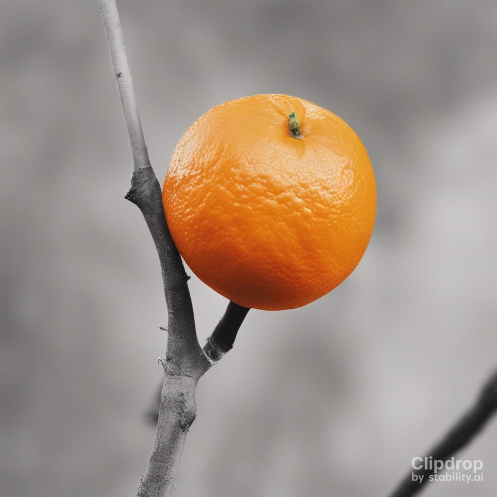
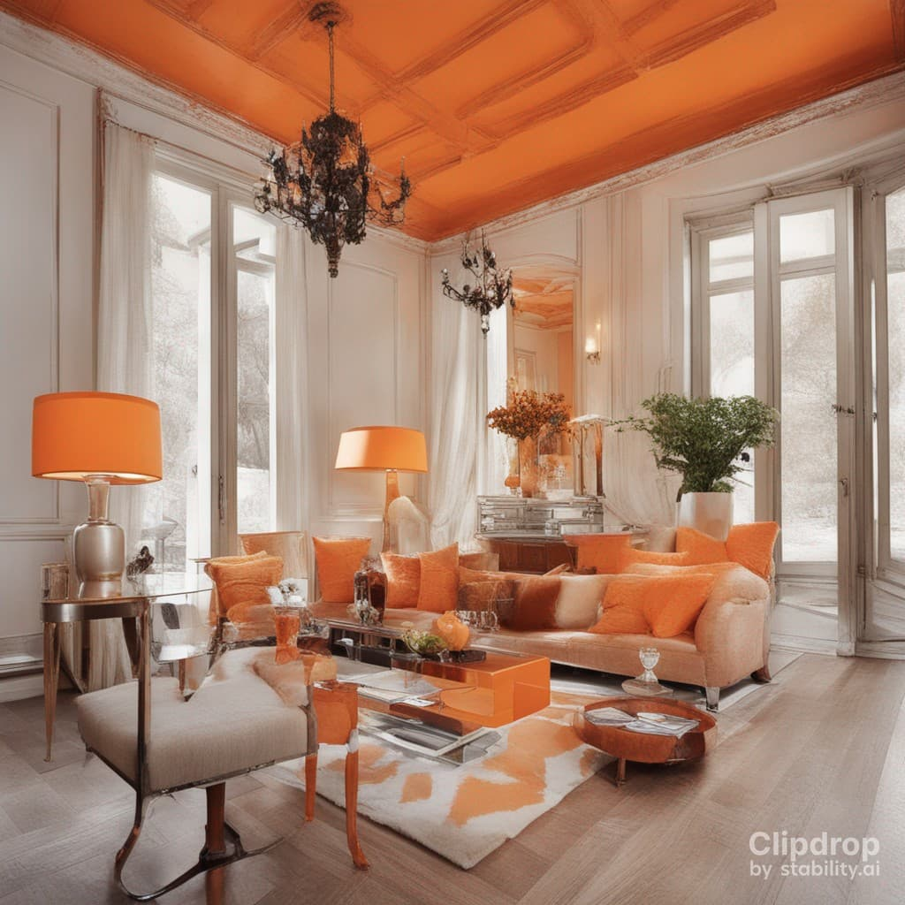
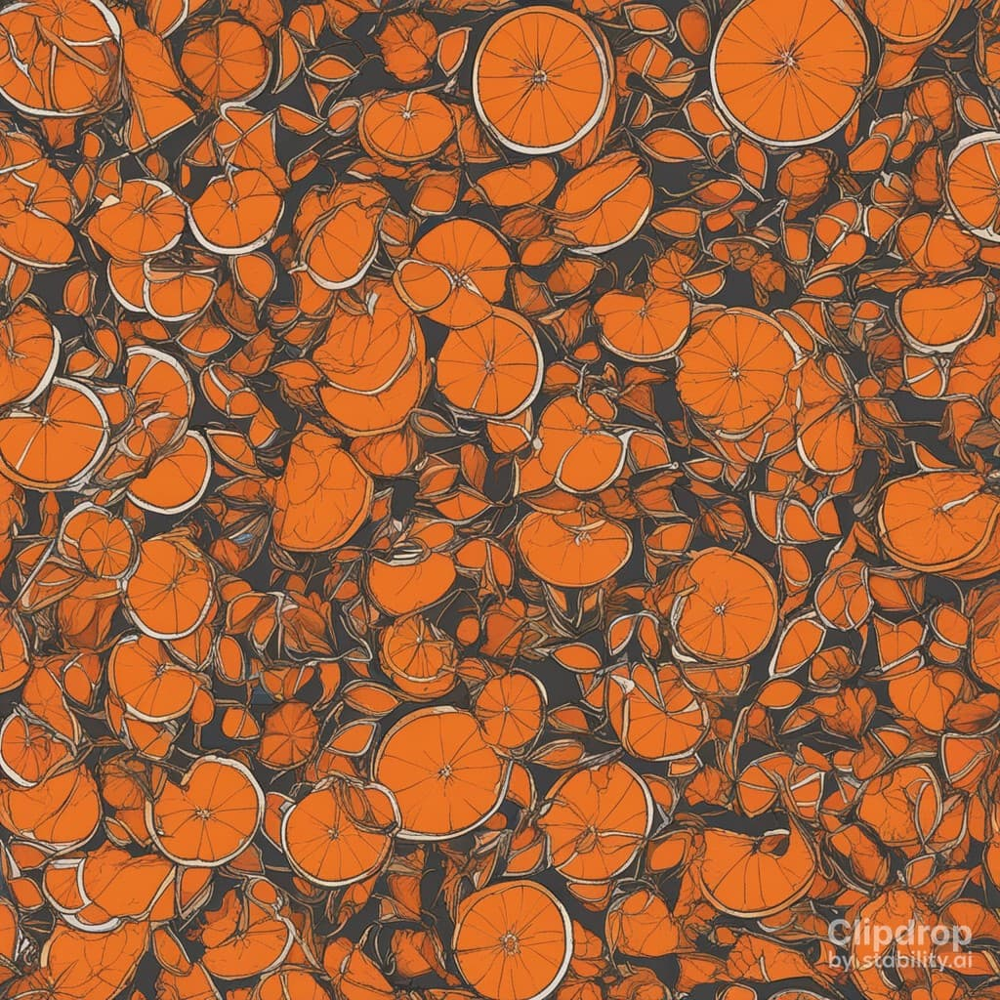

Оранжевый цвет: Введение
Оранжевый цвет - это один из самых привлекательных и ярких цветов в спектре видимого света. Этот цвет является результатом комбинации красного и желтого цветов и обладает уникальной привлекательностью и значимостью в культуре, искусстве и природе. В данной статье мы исследуем различные аспекты оранжевого цвета, его влияние на психологию человека, использование в различных областях и его значения в различных культурах.
1. Психологические аспекты оранжевого цвета
Оранжевый цвет считается цветом радости, энергии и творчества. Он обладает способностью вызывать положительные эмоции и поднять настроение. Психологические исследования показывают, что оранжевый цвет способен стимулировать активность головного мозга и улучшать концентрацию. Это делает его популярным выбором для оформления рабочих пространств и классов, где требуется повышенная продуктивность и внимание.
Кроме того, оранжевый цвет ассоциируется с теплотой и дружелюбием. Он может усилить чувство общности и содействовать социализации. Этот цвет также имеет связь с амбицией и оптимизмом, что делает его популярным среди предпринимателей и тех, кто стремится к достижению успеха.
2. Оранжевый цвет в культуре и искусстве
Оранжевый цвет имеет богатую историю в искусстве и культуре различных народов. В искусстве, он часто используется для выражения ярких и жизнерадостных настроений. Картины с оранжевыми оттенками могут вызывать ощущение движения, веселья и внутренней гармонии.
Культурные значения оранжевого цвета также разнообразны. Например, в западных странах оранжевый цвет ассоциируется с осенними праздниками и урожаем, в то время как в индийской культуре он связан с религиозными фестивалями и традициями. В некоторых культурах оранжевый цвет может иметь символическое значение, например, представлять собой силу, богатство или просветление.
Заключение
Оранжевый цвет - это уникальный и привлекательный цвет, который играет важную роль в психологии человека, искусстве и культуре. Его способность поднять настроение, стимулировать мышление и усилить чувство общности делает его популярным выбором в различных областях. Помимо этого, его символическое значение в различных культурах придает ему глубокий культурный контекст. Оранжевый цвет продолжает оставаться важным элементом нашей жизни и продолжит влиять на нас как визуально, так и эмоционально.